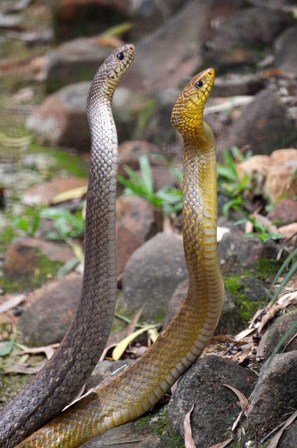

धामनIndian Rat Snake
Ptyas mucosa · Colubridae · REP-0002

- Scientific name
- Ptyas mucosa (Linnaeus, 1758)
- Family
- Colubridae
- Hindi
- धामन / दाउद साँप
- Status here
- native
- IUCN
- LC
When to look कब देखें
Expected mainly in March, April, May, June, July, August, September, October, November.
Indian Rat Snake / Oriental Rat Snake
Ptyas mucosa (Linnaeus, 1758) — Colubridae
धामन — पूर्वी UP का सबसे ज़्यादा मारा जाने वाला साँप है — इसलिए नहीं कि यह ख़तरनाक है (यह ज़हरीला नहीं है), बल्कि इसलिए कि यह बड़ा, तेज़ है और अक्सर कोबरा समझ लिया जाता है। हर धामन जो मारा जाता है, वह एक साल में 50–100 चूहों का नियंत्रण खो देता है — किसान का सबसे अच्छा मुफ्त कीट-नाशक।
Quick Identification त्वरित पहचान
| Feature | Description |
|---|---|
| Size | Large snake, 1.5–2 m (record to 3 m); very fast mover |
| Colour | Brown to olive-brown above with irregular darker spots/stripes on posterior body |
| Underside | Yellowish-white, cream; uniform without strong patterning |
| Head | Elongated, slightly distinct from neck; large eyes with round pupils |
| No hood | Critical distinction from cobra — dhaman never spreads a hood |
| Behaviour | Runs immediately when disturbed; hisses loudly and vibrates tail when cornered (bluff) |
Field rule: Large, fast, brown snake + no hood + round pupils + runs immediately when disturbed + in agricultural/village setting = almost certainly dhaman. Confirm by checking for no hood spread when threatened.
Morphology आकारिकी
| Feature | Measurement |
|---|---|
| Adult length | 1.5–2 m (record to 3 m) |
| Body scale rows (mid-body) | 17–19 |
| Dentition | Rear-fanged (opisthoglyphous) — mild venom ineffective on humans |
Body: Slender, elongated, with long tapered tail. Scales keeled (each scale has a central ridge) — gives a slightly rough texture unlike the smooth scales of the cobra. India's largest common colubrid.
Head: Elongated, narrow, slightly distinct from neck. Large eyes with round pupils — in strong contrast to the vertical (slit-shaped) pupils of venomous pit vipers.
Coloration: Olive-brown to grey-brown above. Anterior body often more uniform; posterior body and tail with irregular darker chevrons or spots. Labial (lip) scales paler. Belly cream to yellowish-white.
Juveniles: More distinctly patterned; body with more obvious dark bands or spots; head often with dark vertical bars. Can be misidentified as different species.
Cobra vs. Dhaman — The Critical Distinction कोबरा और धामन का अंतर
This table can save a snake's life — and sometimes a human's.
| Feature | Indian Rat Snake (Dhaman) | Indian Cobra |
|---|---|---|
| Hood | Never spreads | Spreads wide when threatened |
| Speed | Very fast — runs away | Slower; stands its ground |
| Scale texture | Keeled (rough) | Smooth |
| Head shape | Elongated, narrow | Broader, more rounded |
| Hissing | Very loud hiss + tail vibration | Hood spread + hiss |
| Behaviour | Prefers to flee | More likely to stand ground |
| Venom | Effectively none for humans | Highly dangerous — neurotoxic |
If you see a large brown snake: Watch what it does. If it runs immediately — almost certainly dhaman. If it stops and spreads a hood — cobra. Do not approach either. Give the dhaman time to leave. If cobra — maintain distance, alert others, do not kill — call snake rescue.
Ecological Role पारिस्थितिक भूमिका
Rodent control — primary ecological role: Rat snakes hunt by active searching — entering burrows, following rodent runs through fields, and consuming house rats (Rattus rattus, Rattus norvegicus), field mice and voles (Mus sp., Bandicota indica), gerbils, and young hares. One adult rat snake can consume 50–100 rodents per year. In a paddy field during October harvest — when rodent density peaks — rat snakes are the apex rodent control agents.
Other prey: Frogs (especially Indian Bull Frog and Common Toad — a major prey item), bird eggs and chicks in accessible nests, lizards (Garden Lizard occasionally taken), and other snakes (cannibalistic and predatory toward smaller snake species).
Prey for: Small Indian Mongoose — the most important predator; mongooses specialise in snake hunting; Indian Peafowl (kills snakes by pecking at the head); large raptors (Short-toed Snake Eagle, Common Kestrel).
Ecosystem role: Without rat snakes, rodent populations in eastern UP's paddy fields would be significantly higher, causing much greater grain loss.
Life Cycle / Phenology जीवन चक्र
| Month | Event |
|---|---|
| Mar–Nov | Active season; moves daily |
| Apr–Jun | Mating season |
| Jun–Aug | Female lays 6–16 eggs in rotting wood, leaf litter, termite mounds, or soil |
| Aug–Oct | Eggs hatch; hatchlings 35–45 cm |
| Dec–Feb | Dormancy (not true hibernation — moves on warm winter days) |
Growth: Continuous throughout life; females grow larger. Lifespan: 10–15 years in the wild.
Agricultural / Human Relevance कृषि एवं मानव उपयोग
Rodent pest control: The single most important economic service provided by any reptile in eastern UP. Rat snakes dramatically reduce rodent damage to stored grain and standing crops. Their elimination leads to rodent population explosions.
Illegally killed: Despite being legally protected under Wildlife Protection Act 1972 (Schedule II), rat snakes are routinely killed. The primary drivers are fear (cobra confusion), cultural beliefs, and opportunistic killing.
Legal status: Killing any snake in India is illegal under WPA 1972. This is poorly enforced but the law exists.
Snake rescue: Village-level understanding of the dhaman is improving with increasing smartphone access — people now photograph snakes before acting. Snake rescue services operate in Lucknow, Varanasi, and some district centres; awareness in Basti district is growing.
Expected Locally स्थानीय रूप से अपेक्षित
Not a field record. Written from published accounts for eastern Uttar Pradesh. No confirmed local sighting yet — if you have seen it, that is what the atlas needs.
अभी तक स्थानीय पुष्टि नहीं। यह विवरण प्रकाशित स्रोतों से है, किसी अवलोकन से नहीं।
In Basti district, the Indian Rat Snake is regularly encountered in paddy fields, river bunds, and on village roads during the active season (March–November). The species is most visible during the monsoon months (June–October) when frogs are abundant. Multiple specimens have been recorded crossing the road near Saryu floodplain fields at dusk — likely hunting toads and frogs that emerge after rain. Most encounters end with the snake being killed; farmers consistently misidentify it as cobra. Several hatchlings found in October near a termite mound on a field margin suggest active use of termite structures for egg incubation.
Distribution वितरण
Global range: One of the largest and most widely distributed colubrid snakes in Asia — from Iran and Afghanistan east through the Indian subcontinent, Sri Lanka, Bangladesh, Myanmar, Southeast Asia to China. Found at elevations from sea level to approximately 2,000 m.
In India: Distributed across the entire country in all warm habitats including agricultural land, forest margins, coastal scrub, and urban fringes. Absent only from high-altitude zones.
In Uttar Pradesh: Extremely common across the entire state. One of the most frequently encountered snakes in the Gangetic plain — in paddy fields, mango orchards, river bunds, and village margins.
In Basti district / eastern UP: Year-round resident (dormant December–February). Most common and visible in paddy and wheat field margins, river embankments, and village scrub.
Research Questions शोध प्रश्न
- How do people in your village identify snakes? — Survey 10 families: what features do they use? Do they know the hood/no-hood rule?
- Are rat snakes active during the day or night in your area? — Time all observations; does activity pattern differ by season?
- Where do dhaman take shelter in your village? — Record every dhaman sighting with habitat notes: field, bund, building, wood pile, termite mound.
- Does the presence of a mongoose territory correlate with fewer dhaman sightings? — Track mongooses and dhaman in the same area for 3 months.
- How many dhaman are killed per year in a 1 km transect of your village road? — Survey road-killed snakes over one active season (March–November); calculate kill rate.
Similar Species मिलती-जुलती प्रजातियाँ
| Species | How to distinguish |
|---|---|
| Indian Cobra (Naja naja) | Hood spreads when threatened; shorter, stockier; slower; highly venomous |
| Banded Racer (Argyrogena fasciolata) | Smaller (1–1.5 m); more distinctly banded; similar habitat |
| Checkered Keelback (Xenochrophis piscator) | Smaller; strongly checked pattern; always near water; non-venomous |
| Common Krait (Bungarus caeruleus) | Blue-black with white bands; nocturnal; highly venomous; slow |
Taxonomy & Classification वर्गीकरण
Original description. Ptyas mucosa was originally described by Carl Linnaeus in 1758 in Systema Naturae, 10th edition, as Coluber mucosus. The species name mucosus means "mucous" or "slimy" in Latin — possibly referring to the moist appearance of its shiny scales. The genus Ptyas was established by Fitzinger in 1843. The protonymic name Coluber mucosus places authorship squarely with Linnaeus, 1758.
Subspecies. Several subspecies have been proposed across the wide range:
| Subspecies | Range |
|---|---|
| P. m. mucosa | Indian subcontinent including UP |
| P. m. mucosia (sensu auctorum) | Southeast Asian populations |
Family and order placement. Belongs to the order Squamata, family Colubridae (colubrids — the largest family of snakes). The family Colubridae contains approximately 1,800 species of snakes worldwide; the vast majority are non-venomous or mildly venomous. The genus Ptyas contains approximately 10 species of large Oriental rat snakes. Ptyas mucosa is the largest species in the genus.
Phylogenetic notes. Molecular phylogenetics confirms Ptyas is placed within the Colubrinae, closely related to the North American Coluber and Masticophis genera. The rear-fang (opisthoglyphous) condition — with mildly venom-conducting teeth at the back of the upper jaw — is a derived state within the Colubrinae. The venom produced is technically a mild toxin but completely ineffective against human targets at any realistic bite dose.
IUCN status rationale. Assessed as Least Concern (LC) by the IUCN Red List. Widespread, common, and adaptable. Primary threats: road kill, habitat loss, and direct persecution — all three of which are significant in eastern UP. Legal protection under Schedule II WPA 1972 (India) provides nominal safeguard.
Photo Gallery फोटो गैलरी
Atlas Connections संबंधित प्रजातियाँ
- MAM-0002 Small Indian Mongoose — primary predator; mongoose–dhaman encounters are a defining wildlife interaction of eastern UP villages
- AMP-0001 Common Toad — primary prey; toad populations track rat snake activity
- AMP-0002 Indian Bull Frog — major prey, especially large adults
- FLR-0014 Paddy — hunts rodents in paddy fields during harvest; most active Oct–Nov
- SFL-0001 Termite — nests in or near termite mounds; uses their warmth for egg incubation
- REP-0001 Garden Lizard — occasional prey for large adults
References संदर्भ
- Linnaeus, C. (1758). Systema Naturae, 10th edition. Laurentii Salvii, Stockholm.
- Whitaker, R. & Captain, A. (2004). Snakes of India: The Field Guide. Draco Books, Chennai.
- Smith, M.A. (1943). Fauna of British India: Reptilia and Amphibia, Vol. III — Serpentes. Taylor & Francis, London.
- Vyas, R. (2013). Notes on diet of Ptyas mucosa. Reptile Rap, ZSI Newsletter, 15.
- Zoological Survey of India. Fauna of Uttar Pradesh — Reptilia. ZSI, Kolkata.
- GBIF Occurrence Data — Ptyas mucosa, India (2026). GBIF taxon key: 2459027.
Source file: species/fauna/reptiles/indian_rat_snake.md